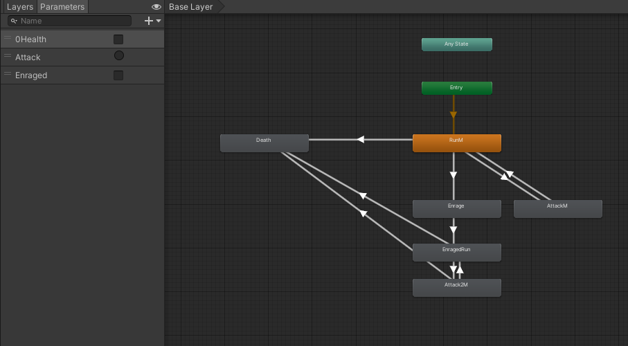
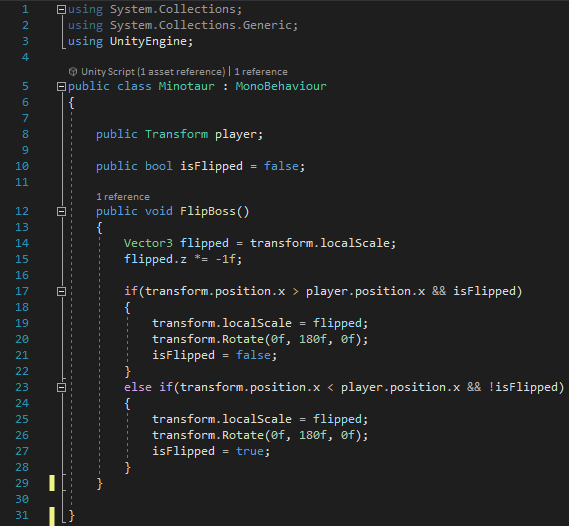
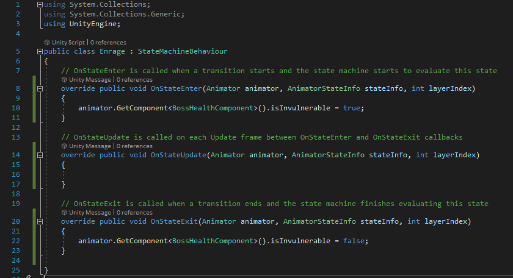
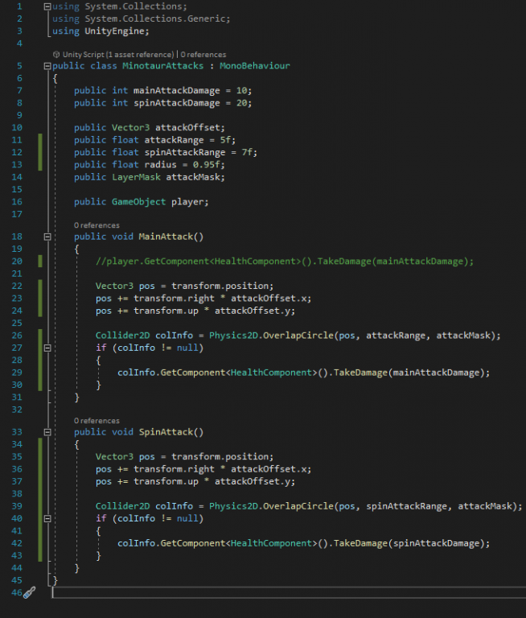
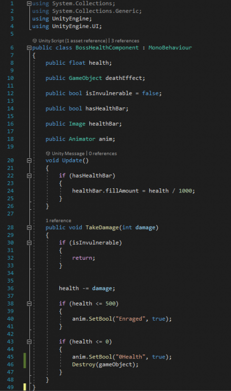

Into the Labyrinth
Overview
Into the Labyrinth is a prototype 2D platformer that I created for my university work.
It was 1 of 4 prototypes I made for my Rapid Games Prototyping Module. I had around 6 weeks to complete the game.
The game follows a character traversing their way into the labyrinth from Greek Mythology to defeat the evil Minotaur.
Game Mechanics
Multi Stage Boss Fight:
The main mechanic I focused on with this game was the multi stage boss fight with the minotaur. This gave the player a more interesting experience when it came to the final level.
In order to do this I made use of state machines for the various behaviours the boss would exhibit. For example the Enrage stage which would increase attack frequency and speed when the boss was under half health.
Code Snippets

Here is the animation graph showing the various animations used within the boss and how they interact.
This is the main class for the boss, it controls the movement of the boss and gets them to follow the player.
This is the enrage state machine. This grants temporary invincibility to the boss while it does a charge up animation before attacking again.
The attack class focuses on seeing if the player is within range, if they are it will perform one of two attacks depending on the boss fight stage.
Laslty is the health component which checks to see whether of not to trigger the next stage or the death event.
Parallax Background:
Also for this project I decided to add a parallax background to give the player more of a sense that they were moving through the levels rather than just having a static background.
Moving Platforms:
One of the main game mechanics was disasters that kill the players and destroy the structures they have built. I was tasked with creating the meteor shower. This also utilised the chaos destruction system as the design team wanted scattered meteor debris shards rather than just an explosion VFX.
Mechanics Demonstration
This video shows the moving platforms and the parallax background.